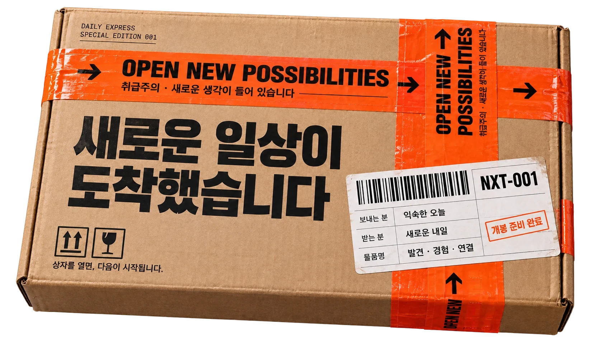

물품명 · 3장
상자 안에는 세 장이 들어 있습니다
01 · DISCOVER1장
발견
익숙한 업무를
낯설게 다시 보기
02 · EXPERIENCE2장
경험
작게 시도하고
빠르게 고치기
03 · CONNECT3장
연결
흩어진 성과를
하나로 잇기
DELIVERED · 2027 업무 혁신 계획
OPEN NEW POSSIBILITIES취급주의 · 새로운 생각이 들어 있습니다OPEN NEW POSSIBILITIES취급주의 · 새로운 생각이 들어 있습니다
송장 · NXT-001
보내는 것은 익숙한 오늘,
받는 것은 새로운 내일

NXT-001
완료
- 보내는 분
- 익숙한 오늘
- 받는 분
- 새로운 내일
- 물품명
- 발견 · 경험 · 연결
완료
DELIVERED · 2027 업무 혁신 계획
OPEN NEW POSSIBILITIES취급주의 · 새로운 생각이 들어 있습니다OPEN NEW POSSIBILITIES취급주의 · 새로운 생각이 들어 있습니다
동봉 자료 · 네 칸 이관표
빌려 온 본문 #87 네 칸 이관표 · 내용은 다른 가상 예시
DELIVERED · 2027 업무 혁신 계획
OPEN NEW POSSIBILITIES취급주의 · 새로운 생각이 들어 있습니다OPEN NEW POSSIBILITIES취급주의 · 새로운 생각이 들어 있습니다
1장 · 발견
업무 시간의 삼 분의 일이 반복입니다
되풀이 업무34%
DAILY LOG · 주당 업무 시간
같은 자료 다시 입력5.2회
REPEAT · 사업 하나당
보고서 한 건3.4시간
REPORT · 평균
자료: ○○교육청 업무 일지 분석(가상 예시)
DELIVERED · 2027 업무 혁신 계획
OPEN NEW POSSIBILITIES취급주의 · 새로운 생각이 들어 있습니다OPEN NEW POSSIBILITIES취급주의 · 새로운 생각이 들어 있습니다
동봉 자료 · 줄어드는 공정
빌려 온 본문 #76 줄어드는 공정 띠 · 내용은 다른 가상 예시
DELIVERED · 2027 업무 혁신 계획
OPEN NEW POSSIBILITIES취급주의 · 새로운 생각이 들어 있습니다OPEN NEW POSSIBILITIES취급주의 · 새로운 생각이 들어 있습니다
2장 · 경험
작은 상자 세 개를 먼저 보냅니다
NXT-101
- 물품명
- 보고서 한 장으로
- 받는 분
- 본청 3개 과
NXT-102
- 물품명
- 자료 한 번 입력
- 받는 분
- 교육지원청 2곳
NXT-103
- 물품명
- 회의 30분 상한
- 받는 분
- 전 부서
DELIVERED · 2027 업무 혁신 계획
OPEN NEW POSSIBILITIES취급주의 · 새로운 생각이 들어 있습니다OPEN NEW POSSIBILITIES취급주의 · 새로운 생각이 들어 있습니다
동봉 자료 · 한 줄 체계도
빌려 온 본문 #73 한 줄로 읽는 체계도 · 내용은 다른 가상 예시
DELIVERED · 2027 업무 혁신 계획
OPEN NEW POSSIBILITIES취급주의 · 새로운 생각이 들어 있습니다OPEN NEW POSSIBILITIES취급주의 · 새로운 생각이 들어 있습니다
3장 · 연결
받은 상자는 다음 사람에게 다시 보냅니다
NXT-002
- 보내는 분
- 올해 해 본 부서
- 받는 분
- 내년에 해 볼 부서
- 물품명
- 해 본 방법 · 고친 점 · 남은 일
DELIVERED · 2027 업무 혁신 계획
OPEN NEW POSSIBILITIES취급주의 · 새로운 생각이 들어 있습니다OPEN NEW POSSIBILITIES취급주의 · 새로운 생각이 들어 있습니다
DELIVERED · 2027 업무 혁신 계획
OPEN NEW POSSIBILITIES취급주의 · 새로운 생각이 들어 있습니다OPEN NEW POSSIBILITIES취급주의 · 새로운 생각이 들어 있습니다